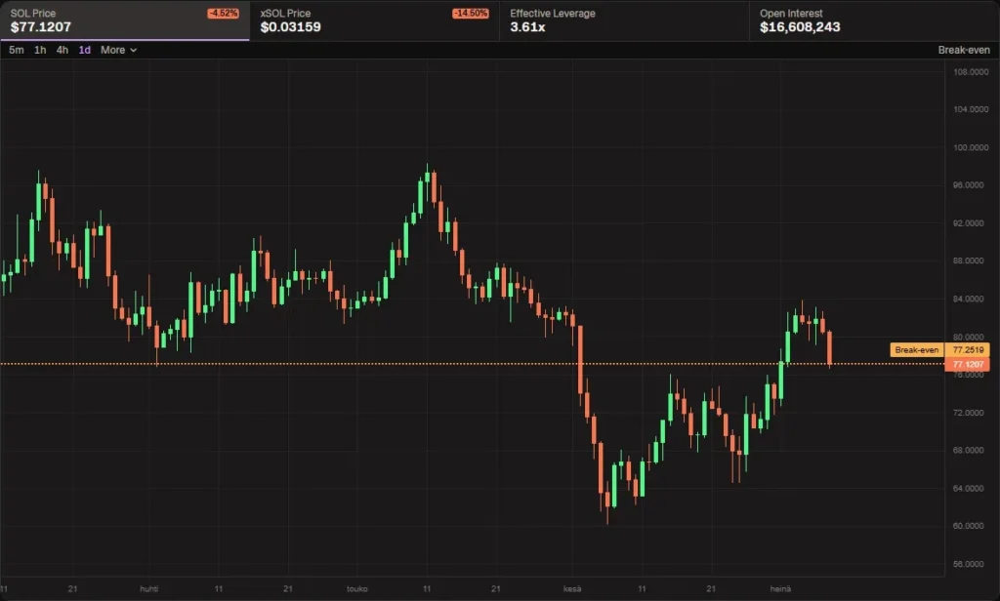
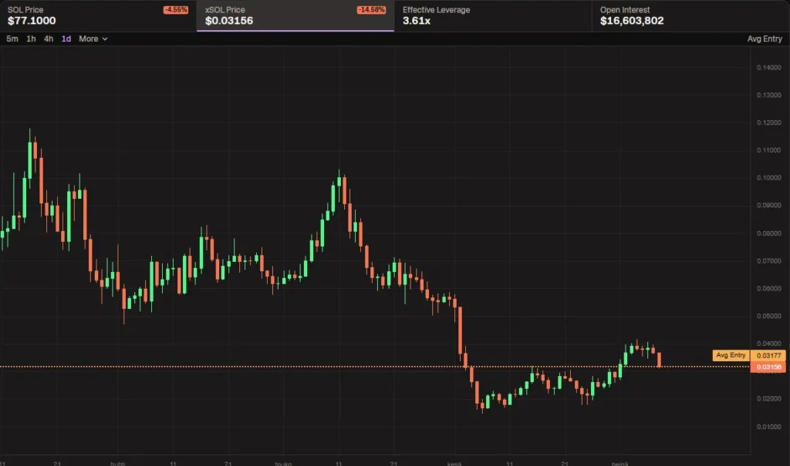

Lyhyesti
- SOL-parissa kaupattavan tokenin dollarihinta on sen SOL-hinta kerrottuna SOL:n dollarihinnalla. Kun SOL liikkuu, token liikkuu – ilman yhtäkään kauppaa.
- Siksi hyvä projekti voi laskea huonossa markkinassa ja heikko nousta hyvässä.
- Mittaa tokenin todellista kehitystä SOL- tai ETH-määräisenä, älä pelkästään dollareissa.
- HYLO:n xSOL moninkertaistaa SOL:n liikkeet: kirjoitushetken noin 3,6-kertaisella vivulla 37 %:n SOL-lasku tarkoitti noin 80 %:n pudotusta.
- Aktiivinen mint-oikeus on yleensä varoitusmerkki, mutta protokollatokeneissa se voi olla osa mekanismia.
Kryptossa on ilmiö, jota useimmat eivät ymmärrä ennen kuin se on jo maksanut heille: token laskee samana päivänä kymmeniä prosentteja, vaikka kukaan ei ole myynyt sitä. Hinta putoaa, kaupankäyntivolyymi on lähes nolla, ostopuolella ei liiku mitään – ja kurssi on silti miinuksella. Tämä ei ole sattumaa eikä manipulaatiota. Se on likviditeettimekaniikkaa, joka koskee kymmeniä tuhansia kryptoprojekteja. Kun ymmärrät, miten se toimii, tokenien hinnanmuutokset näyttävät aivan erilaisilta.
Tämä artikkeli ei ole sijoitusneuvontaa.


Mitä nämä kaksi kaaviota kertovat
Ensimmäinen kaavio näyttää Solanan eli SOL:n dollarihinnan huhtikuusta heinäkuuhun 2026. Toinen näyttää xSOL:n hinnan samalta ajalta. xSOL on HYLO-protokollan vivutettu Solana-token, jonka vipukerroin oli kirjoitushetkellä 3,61. Kaavioita vertaillessa huomaat heti saman kuvion: sama nousu toukokuussa, sama romahdus kesäkuussa, jolloin SOL kävi noin 62 dollarissa, ja sama palautuminen heinäkuussa 77–80 dollarin tuntumaan. xSOL:n kaavio on kuin SOL:n kaavio suurennettuna: muoto on sama, liikkeet isompia.
Kun kaaviot otettiin, SOL:n päivämuutos oli noin −4,5 prosenttia, ja xSOL laski samana päivänä 14,5 prosenttia. Tämä on vipu käytännössä: 4,5 prosenttia kertaa 3,61 on noin 16 prosenttia, ja toteutunut liike osui lähelle sitä. Sama toimii ylöspäin: kun SOL nousee kymmenen prosenttia, xSOL nousee noin 36 prosenttia.
Miksi token liikkuu, vaikka kukaan ei treidaa sitä
Tämä on ydinasia, joka yllättää useimmat. Jos omistat Solana-ekosysteemin tokenin, jota kaupataan SOL-parissa, sen dollarihinta muodostuu kaavasta:
TOKEN_USD = TOKEN_SOL × SOL_USD
Tokenin dollarihinta on siis sen SOL-määräinen hinta kerrottuna SOL:n dollarihinnalla. Jos kukaan ei käy kauppaa TOKEN/SOL-parilla ja suhde pysyy ennallaan, mutta SOL laskee kymmenen prosenttia, myös TOKEN laskee dollareissa kymmenen prosenttia. Tokeniin itseensä ei ole koskettu lainkaan.
Automaattiset markkinatakaajat eli AMM:t – esimerkiksi Solanan DEX-pörssit Raydium ja Orca – toimivat niin sanotulla constant product -kaavalla: poolin kahden tokenin määrien tulo x × y pysyy vakiona k. Hinta määräytyy poolin sisäisestä suhteesta. Jos samaa tokenia kaupataan useassa poolissa, esimerkiksi sekä SOL- että USDC-paria vastaan, arbitraasibotit pitävät poolien hinnat linjassa vuorokauden ympäri. Hintasuhteet liikkuvat, vaikka yksikään tavallinen käyttäjä ei olisi avannut kaupankäyntinäkymää.
Esimerkki numeroilla
Poolissa on 1 000 SOL ja 100 000 TOKENia, ja SOL maksaa 80 dollaria. Poolissa TOKEN maksaa 0,01 SOL eli 0,80 dollaria.
- Seuraavana päivänä SOL nousee 96 dollariin eli 20 prosenttia.
- Poolin sisäinen suhde ei muutu: TOKEN maksaa yhä 0,01 SOL.
- Dollareissa TOKEN maksaa nyt 0,96 dollaria – sekin nousi 20 prosenttia ilman yhtäkään kauppaa.
- Jos TOKENilla on myös USDC-pooli, jossa hinta on yhä 0,80 dollaria, arbitraasibotti ostaa halpaa TOKENia USDC-poolista ja myy sen SOL-pooliin, kunnes hinnat ovat taas samat.
Tämä selittää tilanteet, jotka olet ehkä nähnyt: ostat tokenin, projektin uutiset ovat hyviä, yhteisö on aktiivinen ja kehitys etenee – mutta hinta laskee silti. Syy on se, että SOL tai ETH on laskenut ja koko ekosysteemi on seurannut automaattisesti perässä. Nousevassa markkinassa sama toimii toisinpäin. Tokenisi voi nousta 50 prosenttia, vaikka projekti ei ole tehnyt mitään uutta, koska päätoken vetää muut mukanaan.
Tuhansia tokeneita, sama logiikka
xSOL on ääriesimerkki, koska sen suhde SOL:iin on tarkoituksella vivutettu. Sama peruslogiikka koskee kuitenkin kymmeniä tuhansia muita tokeneita, joiden likviditeetti on sidottu päätokeniin. Solanan pelitokenit, DeFi-protokollat, likviditeettitokenit ja staking-palkkiotokenit käyvät kauppaa pääosin SOL-paria vastaan. Siksi niiden dollarihinta heiluu SOL:n mukana riippumatta siitä, mitä projektissa tapahtuu. Ethereumin ekosysteemissä sama pätee ETH-pareihin.
Tämä selittää myös niin sanotun altcoin-kauden. Kun Bitcoin, ETH tai SOL nousee voimakkaasti, ekosysteemin tokenit nousevat samaan aikaan, koska ne kelluvat päätokenin mukana. Kun päätoken laskee, sama tapahtuu toiseen suuntaan. Projekti voi olla täydellisessä kunnossa, ja silti sen token laskee 40 prosenttia, koska markkinasykli on kääntynyt.
Kryptosijoittajalle Bitcoin ja Ethereum eivät siis ole vain kaksi omaisuuserää muiden joukossa. Ne ovat pohja, jonka päälle kaikki muu rakentuu. Kun arvioit tuottoasi, erota toisistaan se, mitä päätoken on tuottanut, ja se, mitä projekti on tuottanut sen päälle. Tokenisi dollarituotto voi olla positiivinen, vaikka projekti olisi SOL-määräisesti menettänyt arvoaan – ja päinvastoin.
Vipuvaikutus – mitä 3,61-kertainen kerroin tarkoittaa käytännössä
HYLO:n xSOL antaa vivutetun altistuksen Solanalle, ja kerroin moninkertaistaa jokaisen SOL:n prosenttiliikkeen. Kaaviosta tämä näkyy selvästi. SOL laski kesäkuussa alimmillaan noin 62 dollariin, mikä on noin 37 prosenttia huhtikuun noin 98 dollarin huipusta. xSOL laski samassa ajassa noin 0,10 dollarista alle 0,02 dollariin eli noin 80 prosenttia. Vipu toimii molempiin suuntiin, ja heinäkuun palautuminen on ollut xSOL:lla selvästi SOL:ia voimakkaampi.
Toteutunut vipu ei pysy vakiona. Se vaihtelee protokollan vakuustilanteen ja tasapainotuksen mukaan. HYLO:n rakenteessa ei ole futuurikaupalle tyypillistä likvidaatiota: et saa marginaalikaupan kaltaista likvidaatiota tai lisävakuusvaatimusta.
Volatility decay: pitkällä aikavälillä vivutetut tokenit rapautuvat. Jos SOL sahaa voimakkaasti edestakaisin ja palaa lopulta lähtöpisteeseen, xSOL voi silti päätyä lähtötasoa alemmas pelkästään vivun ja tasapainotuksen takia. xSOL sopii parhaiten suuntanäkemykseen, ei passiiviseen pitkäaikaiseen holdaamiseen.
Mint-oikeus – punainen lippu vai protokollan rakenne?
Jos tarkistat xSOL:n Rugcheckin tai Bubblemapsin kaltaisilla analyysityökaluilla, näet, että mint authority on voimassa. Normaalisti tämä on varoitusmerkki: kehittäjä voi luoda lisää tokeneita milloin tahansa, laimentaa kaikkien osuutta ja romauttaa hinnan. Roskaprojekteissa aktiivinen mint-oikeus on yksi yleisimmistä huijauksen välineistä.
xSOL:ssa mint-oikeus on protokollan ydintoiminto, ei riski. Kun ostat xSOL:ia, protokolla luo tokenit sinulle. Kun myyt, ne poltetaan pois kierrosta. Tokenien kokonaismäärä heijastaa avoimia positioita – ei enempää eikä vähempää. Sama rakenne on liquid staking -tokeneissa, kuten Lidon stETH:ssä, ja muissa protokollatokeneissa, joissa luonti ja poltto ovat itse mekanismi.
Ratkaiseva kysymys on: onko luonnille protokollan mukainen peruste, vai voiko kehittäjä luoda tokeneita mielivaltaisesti ilman vakuutta? HYLO:ssa jokainen xSOL:n luonti vaatii vastaavan vakuuden protokollaan, joten järjestelmä on suljettu. Roskaprojektissa tällaista vaatimusta ei ole.
Mitä tämä tarkoittaa, kun analysoit tokeneita
Ennen kuin ostat Solana- tai Ethereum-ekosysteemin tokenin, selvitä kolme asiaa.
1. Missä likviditeetti on ja mihin päätokeniin se on sidottu?
Jos likviditeetti on SOL-parissa, ostat samalla SOL-altistusta, halusit tai et. Kun SOL laskee, tokenisi laskee todennäköisesti mukana, vaikka projektin perusteet olisivat kunnossa. Hintoja voit seurata esimerkiksi CEX-pörsseissä tai suoraan DEX-analyysityökaluilla.
2. Miten token on kehittynyt SOL-määräisenä?
Katso tokenin hinnanmuutosta SOL-määräisenä, älä pelkästään dollareissa. Jos token on noussut dollareissa 20 prosenttia mutta SOL on samaan aikaan noussut 25 prosenttia, token on SOL-määräisesti menettänyt arvoaan, vaikka dollariluku näyttää vihreältä. Tämä kertoo projektin todellisesta kehityksestä, kun päätokenin vaikutus on suodatettu pois.
3. Mikä on volyymi suhteessa hintaliikkeeseen?
Jos vuorokauden volyymi on pieni mutta hinta liikkuu paljon, kyse on juuri tästä mekanismista: SOL heiluttaa tokenia. Se ei ole sinänsä ongelma, mutta se tarkoittaa, että ison position purkaminen liikuttaisi hintaa itsessään merkittävästi. Tämä likviditeettiriski kannattaa arvioida ennen ostoa.
HYLO ja xSOL käytännössä
HYLO on Solana-protokolla, jonka tuotteisiin kuuluu vivutettu Solana-token xSOL. Vipukerroin oli kirjoitushetkellä 3,61, ja se muuttuu jatkuvasti. Protokollalla on kausipohjainen pistejärjestelmä, jossa aktiiviset käyttäjät keräävät pisteitä eri toiminnoista – samantyyppinen rakenne kuin airdrop-farmauksen pisteohjelmissa. Rekisteröitymällä koodilla 76R5IW saat viiden prosentin boostin kaikkiin kauden aikana keräämiisi pisteisiin.
xSOL:n kaltaiset vivutetut tokenit ovat yksi tapa ottaa voimakkaampaa altistusta Solanan hintakehitykseen ilman futuurikaupan monimutkaisuutta ja likvidaatioita. Kaavioista näkyy kuitenkin myös tärkein varoitus: kun romahdus tulee, vipu tekee siitä tuskallisen. 80 prosentin pudotus samassa syklissä, jossa SOL laski 37 prosenttia, on hyvin erilainen kokemus, vaikka molemmat seurasivat täsmälleen samaa kurssia.
Säilytä xSOL:n kaltaiset tokenit omassa lompakossa, jonka avaimet hallitset – ohjeet löydät kryptolompakko-oppaasta. Muista myös verotus: Suomessa SOL:n vaihtaminen xSOL:iin ja takaisin on kryptosta toiseen tehtävä luovutus, joka on verotettava tapahtuma.
Mitä teet tänään
Kun analysoit vivutettuja tokeneita, katso kaavioita aina pareittain: rinnakkain ja samalta aikaväliltä. Kysy itseltäsi, vastaako toteutunut liike sitä, mitä protokolla lupaa. Jos korrelaatio poikkeaa selvästi odotetusta, protokollassa on jotain, mikä ei ole täysin selvää. Se on tietoa, joka kannattaa hankkia ennen ostopäätöstä.
- Avaa omistamiesi tokenien kaaviot SOL- tai ETH-määräisinä ja katso, miten ne ovat oikeasti pärjänneet.
- Tarkista, missä poolissa kunkin tokenin pääasiallinen likviditeetti on.
- Jos harkitset vivutettua tokenia, laske etukäteen, mitä 40 prosentin pudotus päätokenissa tekisi positiollesi.